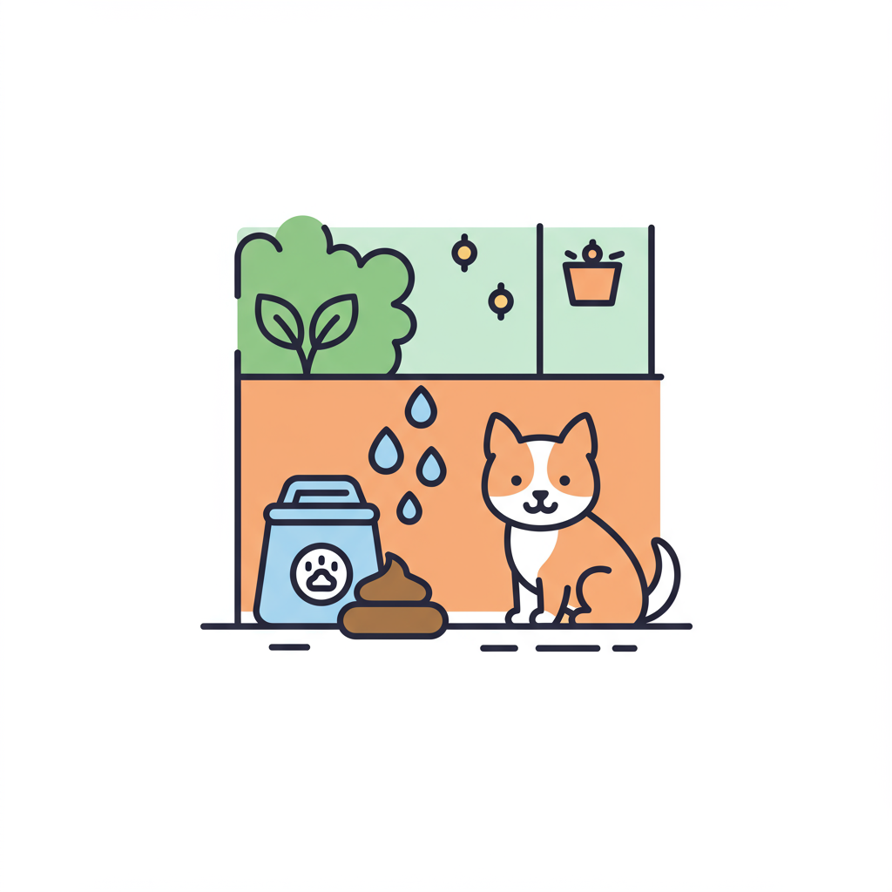

Innovación Cósmica
Nuestros científicos (disfrazados de humanos muy pálidos) trabajan día y noche (terrestre) para desarrollar fórmulas que desafían las leyes de su física.
"Alienígenas expertos en limpieza, ayudando a los humanos con sus mascotas"
Hace eones, en una galaxia muy, muy lejana, observamos su planeta. Vimos su... peculiar relación con esas criaturas peludas que llaman "mascotas" y sus... "regalitos". Decidimos que la Tierra necesitaba nuestra avanzada tecnología de Saneamiento Híbrido Intergaláctico y Terrestre (S.H.I.T.). Nuestra misión: infiltrarnos, observar y, discretamente, ofrecer soluciones de limpieza de otro mundo. Por supuesto, todo esto es estrictamente confidencial. Shhh.
Nuestros científicos (disfrazados de humanos muy pálidos) trabajan día y noche (terrestre) para desarrollar fórmulas que desafían las leyes de su física.
Operamos en las sombras, como un buen agente secreto intergaláctico. Su secreto sobre los "accidentes" de sus mascotas está a salvo con nosotros. Y el nuestro también.
Hemos estudiado sus costumbres y nos hemos adaptado... mayormente. Aún encontramos confuso el concepto de "memes de gatos".
"Mi forma felina es ideal para la observación encubierta. Los humanos confían en los gatos."
"He analizado más de 7,000 olores terrestres. Ninguno es rival para nuestra tecnología."

"Garantizo que nuestros productos son seguros para todas las formas de vida... que conocemos."
Aunque nuestro planeta natal tiene... diferentes estándares ambientales (principalmente porque ya no tiene ambiente), entendemos la importancia que ustedes, los humanos, le dan a su "ecología". Por ello, nuestros productos son formulados para ser lo menos dañinos posible para su ecosistema. Después de todo, un planeta habitable es más fácil de... estudiar.

Aprobado por el Consejo de Mundos Limpios (Sector 7G)

Certificado "No Demasiado Tóxico para Humanos" por la Academia de Ciencias de Zeta Reticuli